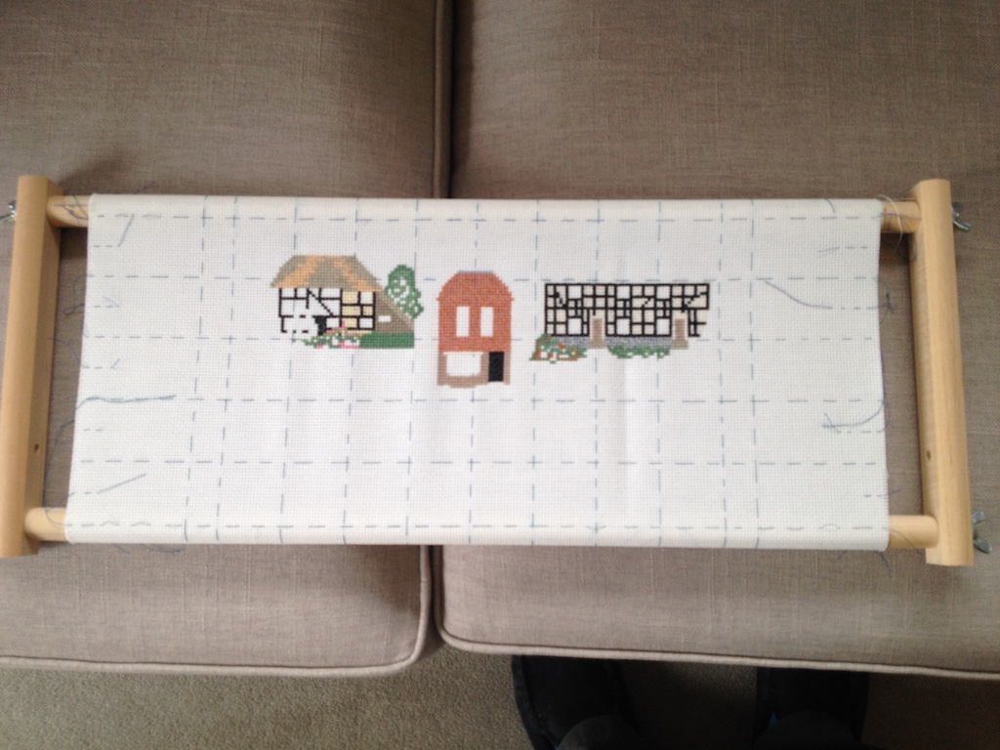

When Austin's mummy was eleven and Rowan's daddy was nine Grandma sewed this picture. It is hanging on the wall in our sitting room and is called cross-stitch. At the time we lived in a house in a village called Lymm. Grandma's picture shows our house, with four people and a dog. The people are Grandma (with the garden fork), Granddad (in the hat), Austin's mummy and Rowan's daddy. The dog was called Meg.
Now, Rowan lives in a village called Berkenwoude, Austin and Juniper live in a town called Davis and we live in a town called Steyning.
So Grandma has started another cross-stitch picture, this time showing buildings in Steyning. The one in the middle will be the clock tower. I wonder if Grandma will finish it before we are able to go out and join in with people as normal.